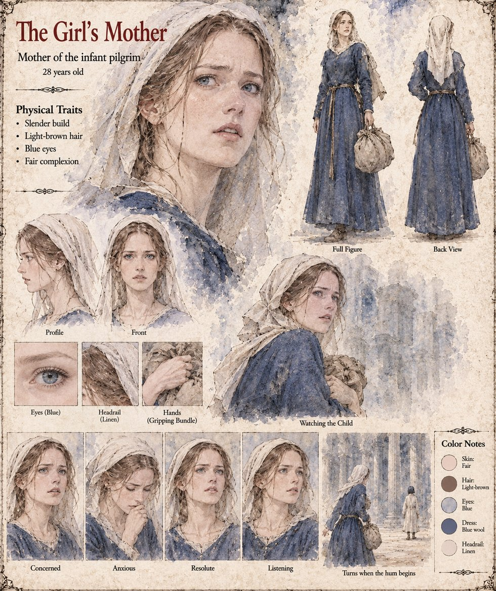

The Girl's Mother
Mother of the infant pilgrim · 28 years old
The mother of the girl not quite three. She is speaking with a keeper nearby while her daughter crosses the plinth hall on her own, and she turns when the hum begins, in time to watch it hold for three breaths and stop. The manuscript gives her no name and no lines.
The sheet gives her age as 28 and draws her slender, with light-brown hair braided under a linen headrail, blue eyes, a lightly freckled fair complexion and a soft, quick-to-worry face, in a blue wool dress belted with a cord, gripping a cloth travel bundle. Its expressions are concerned, anxious, resolute and listening, and its panels show her watching the child and turning when the hum begins. The manuscript gives her no description.